影帝CEO
第一章
「今天的单，准时送达」
↓ 向下滑动
壹 · 凌晨三点的战争
凌晨三点。上海某老旧居民楼，六楼尽头。
整栋楼都沉在黑暗里，只有一扇窗透出冷蓝的光。
三块屏幕上的数据像瀑布一样往下淌。我盯着中间那块——服务器集群的流量图正在发疯。
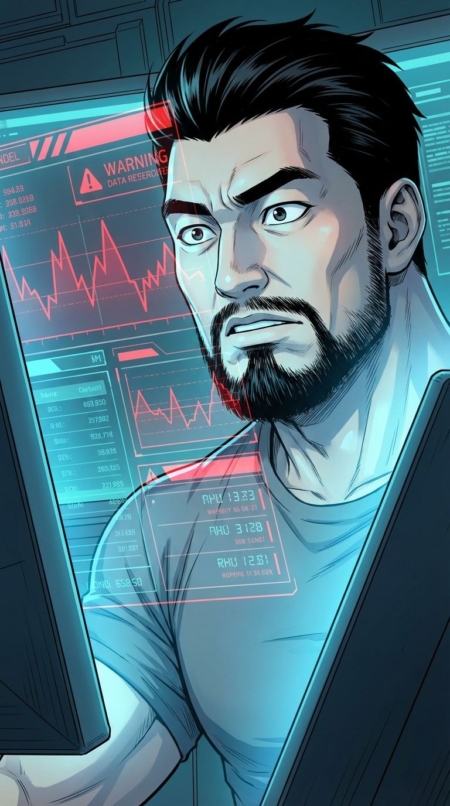
DDOS攻击。每秒800万次请求，直冲"影子科技"的核心API。
有人在凌晨三点对我的公司发起攻击。挑这个时间，还挺懂行。
我抿了口凉透的咖啡，指尖飞速敲击键盘。30秒，定位攻击源——一台位于新加坡的跳板服务器。VPN加密？小意思。
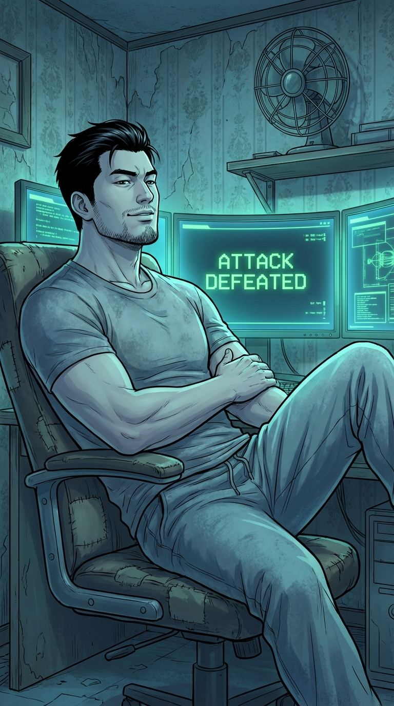
反手黑进对方系统，在根目录留了个文本文件：
「下次别用这么烂的VPN :) —— 影子」
处理完，我往后一靠。椅子发出不堪重负的吱呀声——这把二手椅子跟我这个出租屋一样，随时可能散架。
镜头拉远的话，这个场景挺荒诞的——一间月租1800的破出租屋里，一个穿着拖鞋和老头衫的男人，刚刚击退了一场对估值500亿公司的网络攻击。
那个男人是我。朱江。白天送外卖的那个。
贰 · 早安，打工人
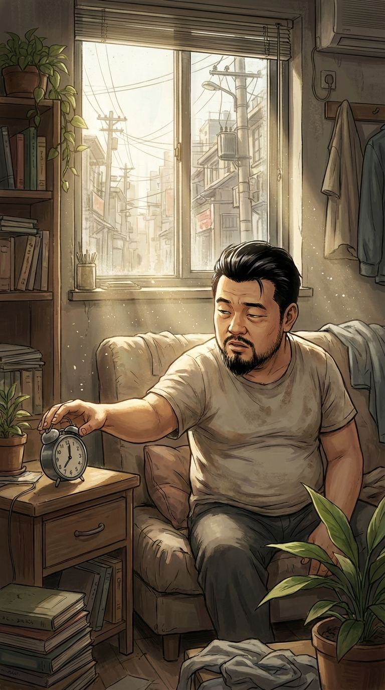
早上七点，闹钟炸响。
我从沙发上弹起来——对，沙发，因为床让给了三块显示器。
穿上外卖服，戴上头盔。镜子里那个人跟三小时前坐在屏幕前指挥千人团队的家伙，完全是两个物种。
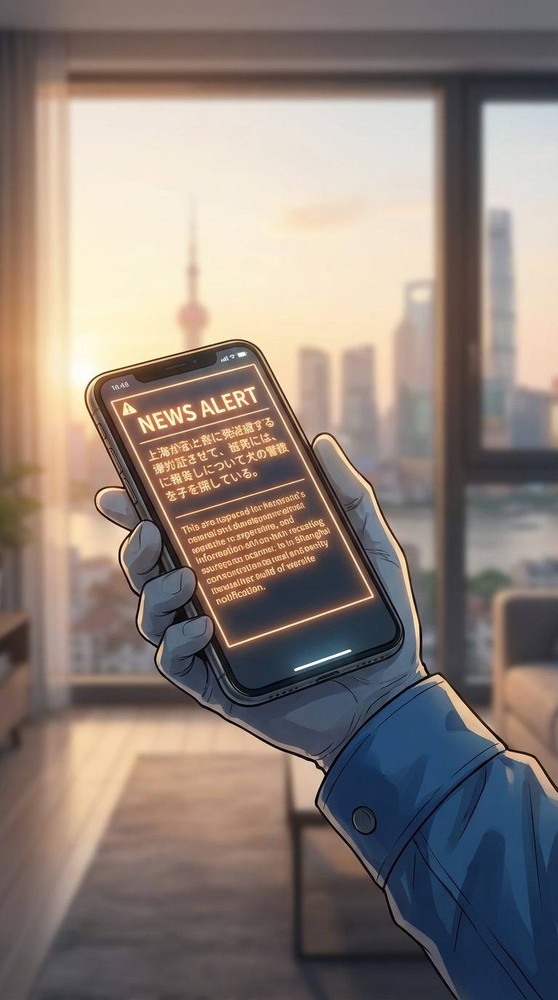
出门前手机弹出一条推送：
「快讯：影子科技估值突破500亿，神秘创始人身份仍是谜」
我划掉通知，锁门，下楼。电动车还停在昨天那个位置，后视镜上的裂纹又多了一道。
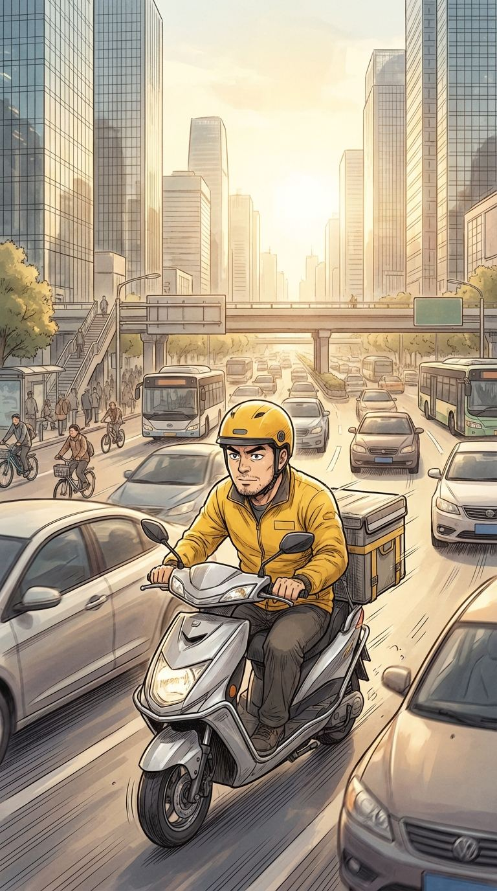
上海的早晨，阳光很好。我骑着电动车穿过早高峰的车流，耳机里放着导航——
「第一单：虹桥路88号，冰美式×2」
叁 · 你这辈子就只能送外卖了
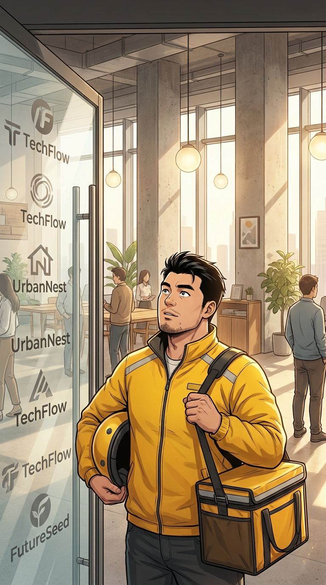
第一单，一栋联合办公的写字楼。玻璃门上贴着各种创业公司的logo，我认识其中三个——都用着我公司的API。
创业公司CEO · 陈总
"送个外卖也能迟到？你看看你们这些人，天天骑个电动车在马路上横冲直撞——说句不好听的，你们这辈子就只能送外卖了。"
我笑了笑，把咖啡递过去："您说得对，对不住。"
心里OS：兄弟，你公司上个月申请接入影子科技的API，被我亲手拒的。原因——代码质量太差，怕拖垮我的服务器。
⚡ 决策点
被当面羞辱后，我选择——
A) 忍气吞声说"您说得对"，保持低调
B) 不动声色，回头用技术给他一个小小的教训 我的选择
走出大楼，我掏出手机。三十秒，查到他公司官网的SSL证书下周到期，顺手把续费提醒邮件从他收件箱里……移走了。
下周他的网站会弹安全警告，估计够他IT团队忙活半天的。
不是什么大事，就图个乐。毕竟——我是个有素质的外卖员。
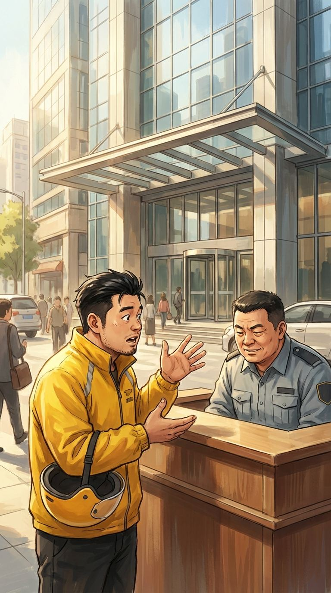
第二单，送到另一栋写字楼。保安大哥拦住我。
我
"哥，这咖啡再不送上去就凉了。凉了客户投诉，投诉了我扣钱，扣钱了我交不起房租，交不起房租我就得睡大街——你忍心吗？"
保安大哥
"……你小子嘴挺贫的。行行行，赶紧上去赶紧下来。"
生存技能第一条：学会跟保安搞好关系。这条我在MIT读博的时候就悟了——当时是跟实验室管理员。
肆 · 大刘的人生指导
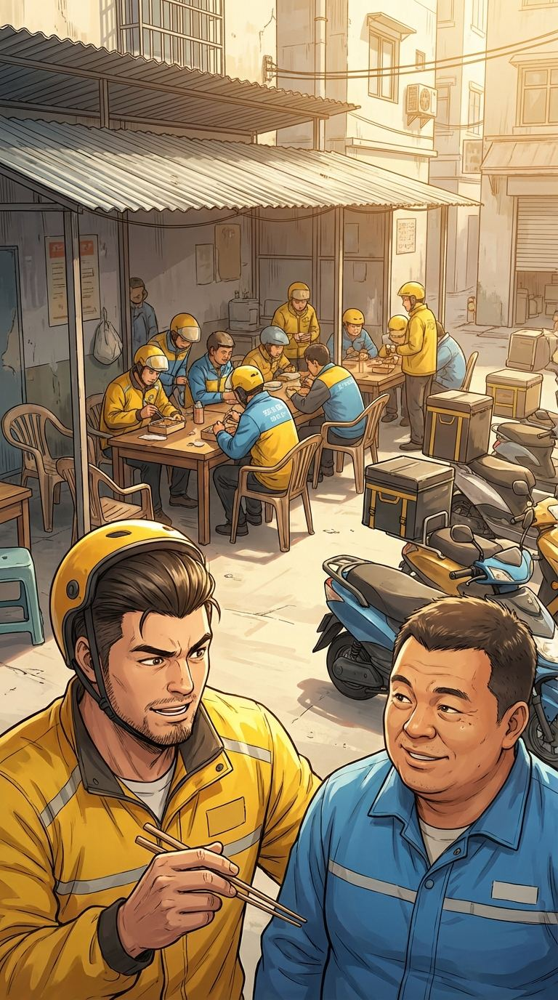
中午，外卖站。
几个骑手挤在小铁皮棚子里躲太阳，吃着各自的午饭。
大刘 · 外卖站站长
"小朱啊，你说你一个大学毕业生，三十好几了还送外卖，你不着急吗？"
大刘，四十五岁，干外卖站站长八年了。自认为看透人生，最大的爱好就是给所有人当人生导师。
大刘
"我跟你说，男人三十五岁以后没有稳定工作就完了。你看隔壁老张，去年考了个货运资格证，现在跑长途一个月两万多……"
我一边吃泡面一边点头。大刘不知道的是——我上个月拒掉了三家世界500强的收购邀约，最高的出价是200亿美金。
大刘
"诶你看这个新闻——影子科技，估值500亿！这老板到底是谁啊？"
大刘
"哈哈哈哈！就你？朱江同志，做梦也得靠谱点！"
大刘笑得泡面差点喷出来。我也跟着笑了。
说实话，我挺喜欢这种日子的。没人知道我是谁，没人带着目的接近我。送外卖的朱江，就只是朱江。
大刘
"对了，我给你介绍个对象——我老婆的闺蜜，32岁，在银行上班，人特别实在。"
我
"刘哥，你上个月就给我介绍过了，人家一听我送外卖，直接把我拉黑了。"
更实在的意思大概是——对外卖员的容忍度更高一点。
伍 · 明光科技
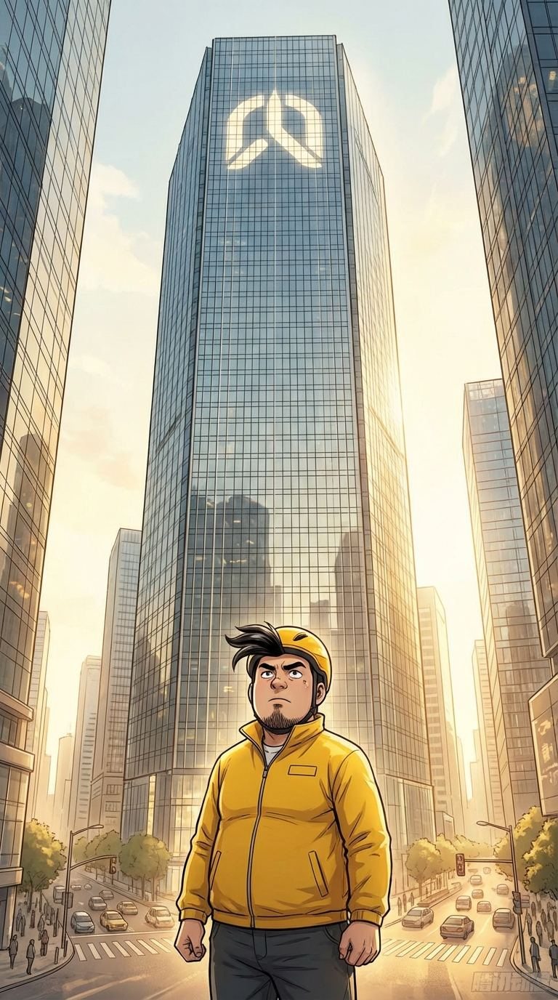
下午两点，第十七单。
导航把我带到了陆家嘴一栋六十层的写字楼前。
我抬头看了一眼楼顶的logo，心里咯噔一下——
明光科技。我最大的竞争对手。
他们的CEO林婉清，三年来一直在追踪"影子"的真实身份。她的技术团队做了上百种推演，想找出我是谁。
而现在，我要端着一份麻辣烫走进她的大楼。
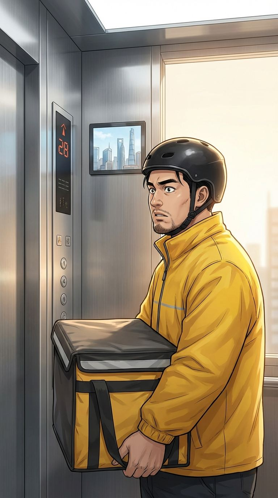
前台刷了外卖通行码，进入电梯。
我摁了32楼。
电梯门在28楼开了。
走进来一个人——干练短发，黑色职业装，气场两米八。
林婉清。
明光科技CEO。福布斯中国30岁以下精英榜。AI行业最年轻的上市公司掌门人。
以及——恨不得把"影子"挫骨扬灰的人。
她站在我旁边，低头看手机。我尽量把自己缩小，假装研究外卖保温袋的拉链。
心跳开始加速。不是因为她好看——虽然确实好看——是因为她手机屏幕上的内容。
那是一份关于"影子科技创始人身份追踪"的邮件标题。
她突然抬头看了我一眼。
三秒钟。她盯着我的脸看了整整三秒钟。
她皱了皱眉，似乎在检索记忆。我感觉自己的心脏快要从外卖服里蹦出来。
叮——32楼到了。
我几乎是小跑着出了电梯。背后，我感觉她的目光还钉在我后脑勺上。
陆 · 匿名来信
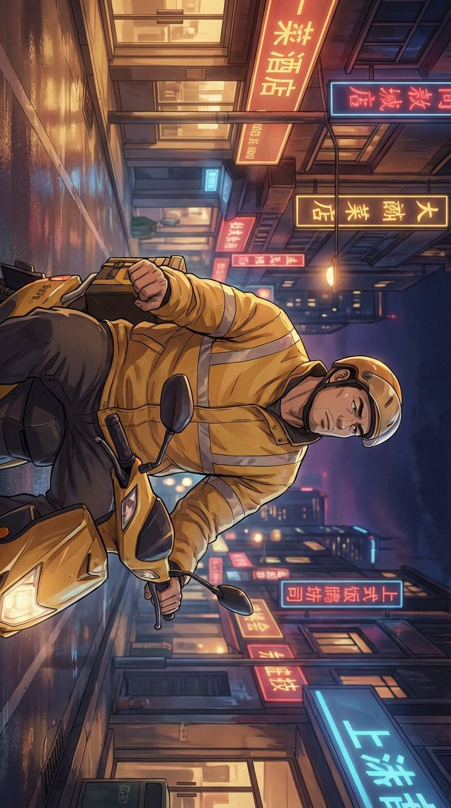
晚上十点。送完最后一单。
骑着电动车回出租屋的路上，上海的夜景在两旁流淌。
今天跑了41单，赚了387块。
三个小时前，我的公司签了一份8亿的政府合同。
反差感这种东西，习惯了就好。
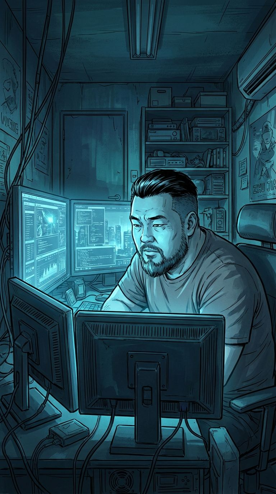
回到出租屋，换上T恤，坐到三块屏幕前。
我是外卖员朱江的一天结束了。影子科技创始人朱江的一天才刚开始。
先处理白天堆积的公司事务——
新产品的Demo不错，批了。
东南亚市场的合作方案，改了两处数据，回了。
CTO问要不要招一个新的安全团队负责人——
"不用，我自己就是最好的安全团队。"
一切如常。直到我看到了那封邮件。
发件人：[已加密]
收件人：shadow@shadowtech.ai
主题：我知道你是谁
影子先生，
你的外卖服下面藏的东西，比你送的那些麻辣烫有意思多了。
我们应该谈谈。
—— 一个朋友
我盯着屏幕，瞳孔收缩。
发件人IP——反向追踪三层跳板后——
指向明光科技的内部网络。
⚡ 决策点
收到匿名邮件，我选择——
A) 立即启动应急方案，准备消失
B) 反向追踪发件人，主动出击 我的选择
C) 按兵不动，继续观察
我活动了一下手指，嘴角微微上扬。
消失？那是怯懦。按兵不动？那不是我的风格。
你想找影子？好啊——那就看看，到底是你先找到我，还是我先查清楚你是谁。
正准备开始追踪，手机震了。大刘的微信消息。
大刘 · 微信
"兄弟告诉你个大消息！！明天开始，老王面馆被明光科技收购了！以后你送餐天天要去他们楼下！方便了吧哈哈哈哈！"
我放下手机，看着天花板沉默了五秒钟。
明光科技——林婉清的公司——收购了我天天去送餐的那家面馆。
巧合？
在我这行——没有巧合。
匿名邮件来自明光科技内部——谁在追踪影子？
林婉清说"你长得有点眼熟"——她认出了什么？
收购面馆——布局，还是巧合？
— 第一章 · 完 —
下一章：「你的面馆，现在是我的了」